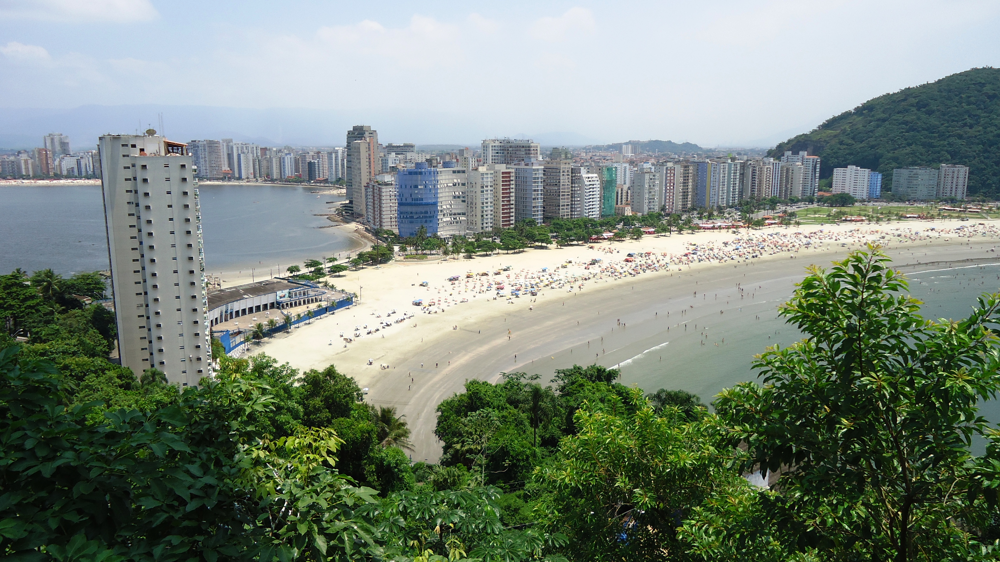

São Vicente

A data de fundação de São Vicente, 22 de janeiro de 1532, marcou a chegada de Martim Afonso de Souza ao sudoeste da ilha de mesmo nome, chamada pelos indios de Engaguaçu (do tupi-guarani, "baia-grande").
Inúmeras referências históricas, entretanto, assinalaram a presença de um povoado anterior, próximo ao porto conhecido por Tumiaru, que em tupiguarani significa "fogo solitário OU farol", alusão 80 costume europeu de acender uma fogueira para orientar as embarcações que aproximavam de um porto.
Alguns membros das tripulações estabeleceram-se nesse antigo povoado de São Vicente, como Gonçalo da Costa, Mestre Cosme Fernandes, João Ramalho, entre outros.
sua Martim Afonso foi o responsável pela colonização oficial de São Vicente e pela elevação à categoria de vila, a primeira do Brasil. Logo ao desembarcar, começou a organizar a administração da colònia, tratando de edificar a Casa do Conselho, a igreja dedicada a Nossa Senhora da Assunção, o pelourinho, o fortim, o estaleiro e mais casas abrigassem colonos e funcionários. que
Além do escambo inicial e da extração de pau-brasil, o núcleo desenvolveu- se graças ao plantio da cana-de-açúcar.
Em suas terras foram plantadas as primeiras mudas trazidas da Ilha da Madeira, e construído o Engenho do Trato ou do Governador, mais tarde denominado Engenho de São Jorge dos Erasmos. Várias foram as dificuldades enfrentadas pelo povoado, sobretudo os ataques de indigenas e de corsários.
O primeiro combate foi travado com os tamoios, que se opunham à fixação dos novos habitantes. Foi necessária a presença de João Ramalho, vindo com Tibiriçá, da Borda do Campo, para auxiliar no controle dos indios.
Estabeleceu-se outro com grande embate espanhol Ruy Moschera que, depois de saquear o porto e pilhar vários armazéns, fugiu para o sul.
No ano de 1542, novo desastre abateu a cidade, desta vez provocado pelo mar, que destruiu grande parte das construções, incluindo a matriz, a Casa do Conselho e a cadeia. Refazendo-se aos poucos, a vila continuou sofrendo ataques e saques de corsários como o de 1591, promovido pelos piratas enviados pelo inglês Cavendish, ou o de 1615, comandado pelo holandés Joris van Spilbergen.
São Vicente, transformada em município em 29 de outubro de 1700, perdeu sua posição de destaque na região, com a expansão da cultura cafeeira no planalto, fase em que Santos tornou-se o principal porto exportador do País. No século XX. estabeleceu-se como cidade turística e pólo industrial.